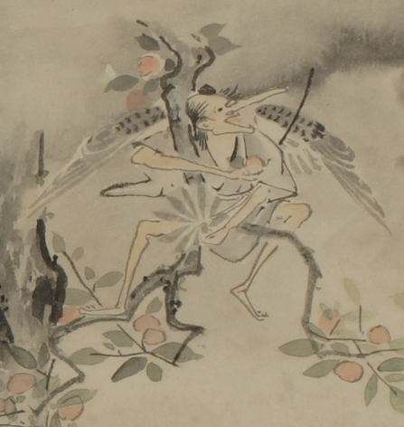

天狗のような化物。頭頂部は禿げ、頭巾のようなものをかぶっている。後頭部に髪が荒々しく伸びている。耳は大きく、鼻は非常に長い。下顎が嘴のように突き出ている。黒っぽい着物をまとい、弓を背負っている。背についた2枚の羽を広げて、柿の木の枝に跨っている。右手に柿の実を持ち、左手に八手の葉をつかんでいる。
著作者：幽花堂／出典：親書誌：U426_nichibunken_0060：鳥羽絵巻；トバエマキ／日付：2007／資源識別子：U426_nichibunken_0060_0001_0002
Copyright (c)2010- International Research Center for Japanese Studies, Kyoto, Japan. All rights reserved.